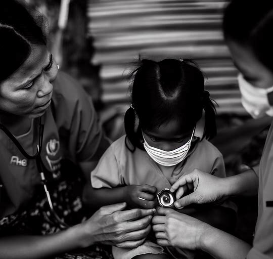

Our Mission
UnitySphere Charity is a global nonprofit organization dedicated to weaving a tapestry of unity across continents. Our primary mission is to bridge societal divides, foster community spirit, and cultivate an environment where every individual feels seen, heard, and valued. Through education, outreach, and community-led projects, we aim to uplift underserved communities and build lasting bonds that transcend borders. At UnitySphere, we believe that in unity lies strength, and together, we can create a world that thrives on collaboration, compassion, and shared aspirations. Join us in our journey towards a harmonized world, where hope and potential are universal currencies. See our compelling stories below.
Datu's Story
In the shadow of barren hills, young Datu dreamt big despite often waking to an empty plate. Hunger threatened his village and dreams, especially his desire for education. Then, UnitySphere Charity arrived, bringing nourishing meals and rekindled hope. With their support, Datu not only found strength in each bite but saw his dream of attending school inch closer. The charity's intervention was more than just food; it was the promise of a brighter future. For Datu, hope was served on a plate.
Bernila's Story
Bernila was bore a secret burden: a congenital heart disease that overshadowed her childhood joys. Each beat echoed a challenge, often leaving her fatigued and excluded from the playful races with her friends. But UnitySphere Charity saw beyond her condition. They provided the vital medical care she needed, mending not just her heart, but her spirit. Now, Bernila chases dreams, not breaths, with her heartstrong rhythm. UnitySphere's touch had turned her ordeal into a tale of triumph. For Bernila, life began anew.

Ezekiel's Story
In the heart of his village, Ezekiel watched his friends don school uniforms, a privilege he only dreamed of. Education seemed out of reach until UnitySphere Charity stepped in, funding a local school. Enrolling immediately, Ezekiel was determined to grasp every lesson. Every day, he would recite his gratitude: "UnitySphere gave me a chance." His eyes gleamed with hope, dreams no longer distant. Thanks to the charity, Ezekiel now walks beside his friends, united in the quest for knowledge.